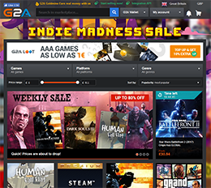

(If you have any queries, please refer to the contact form at the bottom of the page.)
The Layout -
A beautiful website design is what catches the attention of a user, and in doing so keeps that attention. It’s what keeps them exploring the site further. A good practice is the use of consistent designs and basic design principles. This includes but is not limited to a consistent header and footer, navigation methods, intelligent contract between the background and the text on screen, element alignment (where it’s positioned on the website) and a healthy balance of text, images and blank space on every page.
In websites making use of good practice within layouts, you will likely find grids, columns, blocks, rows and CSS. This can greatly appeal to the target audience when designed for them and will increase chances of activity on the website. For example, making use of interactive elements will likely make the user more interested rather than just a direct link.
The Colours -
Having a perfectly balanced amount of colour in a website is vital requirement to avoid the website suddenly becoming unpleasant. Mismatched colours should always be avoided along with too many interactive elements. This could include flying effects across the screen and bright varying colours. A website making use of good practice in colour-schemes will only use a maximum of four colours and will make use of text colours that will contrast the background of the website itself.
The Content -
The content is another fundamental feature in maintaining good practice within a website, as the content is one of the main things the visitor has come for, not just the flashy website. The content has to be presented in a manner that appears inviting. The website should be using common fonts, and restricting the use of font styling to two different types per website. The use of font, font colours, font sizes and hyperlink colours should all be consistent throughout the website. All text should be presented within a swift, understandable style, which should include catchy headings and short paragraphs that are separated with the use of sub-headers and lists.
The Navigation -
Navigation is absolutely necessary for websites, if there is no navigation there is no way of reaching others pages on your website! The good practices within this section begin with making sure all hyperlinks within your method of navigation work correctly and lead to the page specified in the title. They should all be labelled correctly and provide text links in sections such as the footer if leading them to an external site.
The Functionality -
Websites require functionality, alongside everything else that has been mentioned for it to work to the best of its ability. For basic level functionality within good practice the hyperlinks for internal and external pages should all work correctly without flaw. The website should work a variety of browsers, operating systems and mobile communication devices, and must be mobile friendly. There’s no use having a flashy website for only one browser or device if most your visitors will be using the other, or both!

When I was first concept browsing for my website I decided to start by searching for smooth colour blends, sleek transitioned animations and easy to access websites, much like Microsoft's Outlook or BBC, without having to make use of JavaScript though. In the end I decided to choose an older version of Imavex's website, a web development firm that helps businesses build a website to support them.
The layout of my design is influenced by: G2A and Blackboard (NILE) as these are 2 websites I currently use frequently for my education, University of Northampton and gaming purchases. When looking at sites I wished to emulate I didn’t really like the look of Reddit pages as they throw lots of text at you so I decided to space my text in what I feel is an easier to read format.
In doing so, I decided to go for the orange and black style rather than white, as most of my classmates had made use of white-based websites, and doing the same would make the website I chose feel less unique. The Hamburger on their website also struck me as useful and fun to make use of, which in turn made me look for examples of hamburger menus to implement my own, which I did in the end.
I attempted to replicate the container positions with line breaks and styling, but was unable to due to a lack of experience and time and had to make use of what I was currently using, which were red-based boxes on an orange background, excluding the orange background box which acted as an internal body for the website. It should also be noted that despite the images appearing at such a low quality, that they are optimised. The reason behind the low quality is due to the sites themselves being poorly optimised. (G2A in particular.)